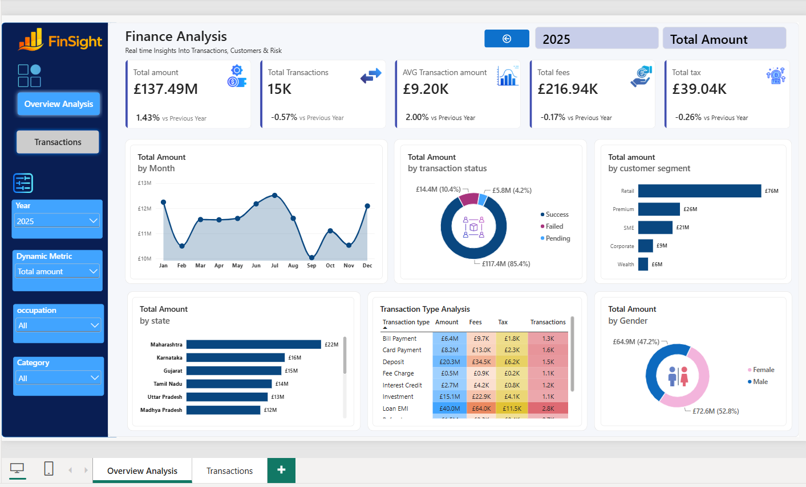
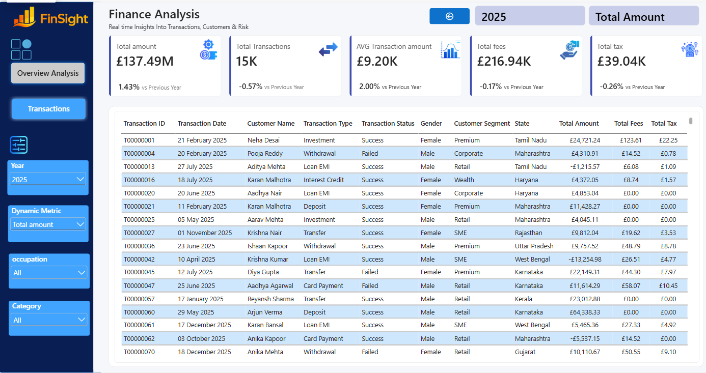
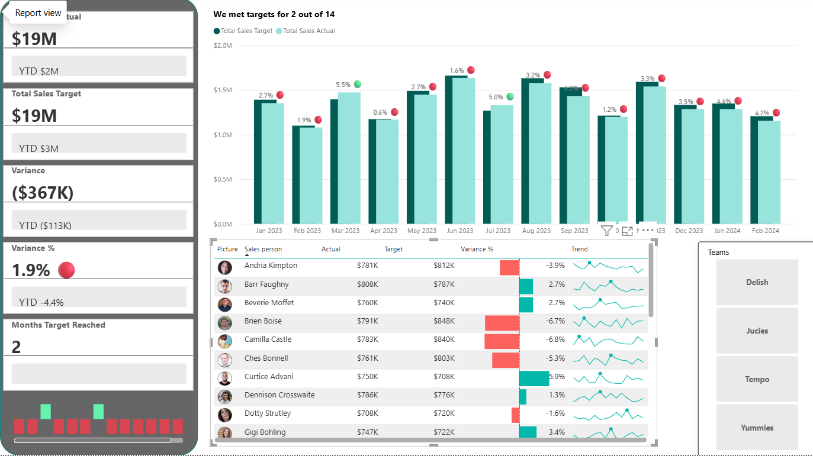

Accounting & Finance Graduate | Aspiring Finance Analyst & Data Analyst
Combining financial knowledge with practical skills in Power BI, DAX, SQL and Excel to analyse data, monitor business performance and support data-driven decision-making.
Explore My Projects View GitHubPractical projects demonstrating financial analysis, data visualisation and business performance reporting.

PROJECT 01 · POWER BI
Developed a multi-page interactive financial analysis dashboard using Power BI to explore transaction performance, financial trends and key business metrics.
Power BIDAXPower Query
PROJECT 02 · POWER BIDeveloped an interactive KPI dashboard using Power BI to monitor business performance, evaluate targets and identify financial trends.
Power BIDAXKPI ReportingTechnical tools and analytical capabilities developed through practical projects and academic experience.
Interactive dashboards, reporting and data visualisation
Measures, calculated metrics and KPI calculations
Data cleaning, preparation and transformation
Data querying, filtering and extraction
Spreadsheet analysis, calculations and reporting
Financial performance, transaction and trend analysis
Actual versus target performance and variance reporting
Performance monitoring and business insights
I am an Accounting & Finance graduate with an MBA in Finance, passionate about financial analysis, business performance and data-driven decision-making.
Through self-directed Power BI projects, I have developed practical experience in data cleaning and transformation using Power Query, creating DAX measures, analysing financial KPIs and building interactive dashboards.
I am particularly interested in opportunities where I can combine my financial knowledge, analytical thinking and technical skills to support business decisions, improve reporting and deliver meaningful insights.
For opportunities in finance, reporting and data analytics, feel free to get in touch.
Email: Mohammedstudent204@gmail.com
GitHub: View my GitHub profile